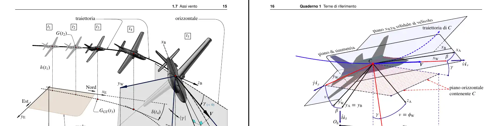

# Skill(s)
## Geospatials
(C) OpenStreetMap Contributors, Transport Tiles courtesy of Andy Alan
As Eganatha, I love making Public Transport features, government proposals, landuses, and much more on OpenStreetMap. I excel at open geodata formats, such as (but not limited to), geojson, gpx, shapefile, osm, and the programs and web services that makes it possible to contribute to OSM, JOSM and Overpass API.
## Photo/Cinemato-graphy
Self-made: A long exposure image, I call it "photon smudges"
I know a little bit of a photography and cinematography lore. Previously I was not interested in programming at all, time has changed and this has become my second thing I do just in case.
## C Programming Language
C is low level programming language. I end up liking C because I was influenced by the Suckless community, and also because how it provides low access to the memory! After that I start compiling bunch of programs (mostly writen in C) and modifying it as I learn C along the way.
## Markups & typesettings

Elementi di Dinamica e simulazione di volo - Agostino De Marco & Domenico P. Coiro
I used LaTeX for most of my essays and reports, because I can just type whatever I want without bothering about the document styles and stuff. HTML is also used for most of my webpages and acompannied with some external styleshets, and building tools.
### HTML5/CSS
I learned HTML and CSS when I was messing around with website's stylesheets and made it the way I want it. Soon I learned basic HTML5 and CSS standards, I don't want to advance too much in this skill but just enough to ease my other related projects.
## Semi audiophile
I listen to music as other do, but sometimes the high fidelity ones. High fidelity does not always means high quality, It means the copies of the song should sound as close as it was recoreded on the studio. Don't ask me where I got those songs...
## Others
I familiarize my self with using UNIX-Like systems long time ago, something like GNU/Linux. Using those system made my developments much more easier thanks to the nature of Open Source. To be specific I use Fedora Workstation 41 as of now on my laptop, and Arch Linux running KDE Plasma 6.3 on my desktop at home. Nowadays I rarely use Microsoft® Windows.